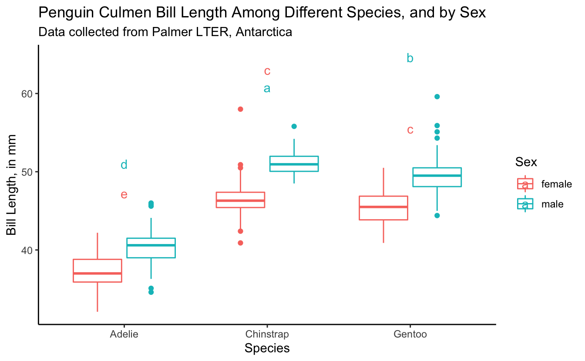

S03E02: ANOVA
Running ANOVAs, utilizing the R output, and üêß
 Artwork by @allison_horst
Artwork by @allison_horst
Prep homework
Basic computer setup
-
If you didn’t already do this, please follow the Code Club Computer Setup instructions, which also has pointers for if you’re new to R or RStudio.
-
If you’re able to do so, please open RStudio a bit before Code Club starts – and in case you run into issues, please join the Zoom call early and we’ll help you troubleshoot.
New to ggplot?
This isn’t a ggplot specific session, though we will be using it a bit. Check out the past Code Club sessions covering ggplot2:
- S01E04: intro to ggplot2
- S01E05: intro to ggplot2 round 2
- S01E10: faceting and animating
- S02E06: another intro to ggplot2
- S02E07: a second intro to ggplot2 round 2
- S02E08: combining plots using faceting
- S02E09: combining plots using faceting and patchwork
- S02E10: adding statistics to plots
- S02E11: making interactive plots with plotly
If you’ve never used ggplot2 before (or even if you have), you may find this cheat sheet useful.
Adding statistics to plots
We had a previous session S02E10 developed by Daniel Quiroz that covers the package ggpubr and adding statistics to ggplots.
We already did t-tests
Mike Sovic covered in the last code club S03E01 how to run t-tests in R. We will be building on what we learned last week.
Getting Started
Click here to get an Rmd (optional)
RMarkdown for today
# directory
dir.create("S03E02")
# directory for our RMarkdown
# ("recursive" to create two levels at once.)
dir.create("S03E02/Rmd/")
# save the url location for today's script
todays_Rmd <-
"https://raw.githubusercontent.com/biodash/biodash.github.io/master/content/codeclub/S03E02_anova/anova.Rmd"
# indicate the name of the new Rmd
S03E02_Rmd <- "S03E02/Rmd/S03E02_anova.Rmd"
# go get that file!
download.file(url = todays_Rmd,
destfile = S03E02_Rmd)Introduction
Often people are first introduced to the R programming language when they are wanting to conduct statistical analyses. My experience is that beginners are often able to conduct the analysis they want, and print their results to the console. But, the process of locating and then using the output of their analysis tends to be more complex.
Today, we are going to go over how to:
- test if our data is suitable for running ANOVA
- run an ANOVA test
- run posthoc tests to understand group differences
- use the ANOVA data output object as a means to understand R data structure.
The purpose of today’s session is more to give you practical experience with running and retrieving ANOVA analysis output, than teaching about the assumptions and background of the test itself.
If you are looking for a good statistics class, I would recommend Dr.¬†Kristin Mercer’s HCS 8887 Experimental Design.
- Load libraries, get data
We are going to start with our favorite dataset palmerpenguins to provide the input data for our analysis.
If you don’t have any of the packages below, use install.packages() to download them.
library(tidyverse)
library(palmerpenguins) # for data
library(rstatix) # for testing assumptions
library(agricolae) # for post-hoc comparison of groups1 - Getting acclimated
Some words on syntax: the dataset penguins is an object within the palmerpenguins package. If you call the object penguins (after executing library(palmerpenguins)), you will be able to see what is contained within that dataframe.
penguins
#> # A tibble: 344 × 8
#> species island bill_length_mm bill_depth_mm flipper_length_mm body_mass_g
#> <fct> <fct> <dbl> <dbl> <int> <int>
#> 1 Adelie Torgersen 39.1 18.7 181 3750
#> 2 Adelie Torgersen 39.5 17.4 186 3800
#> 3 Adelie Torgersen 40.3 18 195 3250
#> 4 Adelie Torgersen NA NA NA NA
#> 5 Adelie Torgersen 36.7 19.3 193 3450
#> 6 Adelie Torgersen 39.3 20.6 190 3650
#> 7 Adelie Torgersen 38.9 17.8 181 3625
#> 8 Adelie Torgersen 39.2 19.6 195 4675
#> 9 Adelie Torgersen 34.1 18.1 193 3475
#> 10 Adelie Torgersen 42 20.2 190 4250
#> # … with 334 more rows, and 2 more variables: sex <fct>, year <int>However, penguins will not be in your environment tab because it is not in your local environment. You can use it without it being in your local environment, but if you are bothered by this, you can save a copy in your local environment such it shows up in that top right pane.
penguins <- penguinsWhat is within this dataset?
glimpse(penguins)
#> Rows: 344
#> Columns: 8
#> $ species <fct> Adelie, Adelie, Adelie, Adelie, Adelie, Adelie, Adel…
#> $ island <fct> Torgersen, Torgersen, Torgersen, Torgersen, Torgerse…
#> $ bill_length_mm <dbl> 39.1, 39.5, 40.3, NA, 36.7, 39.3, 38.9, 39.2, 34.1, …
#> $ bill_depth_mm <dbl> 18.7, 17.4, 18.0, NA, 19.3, 20.6, 17.8, 19.6, 18.1, …
#> $ flipper_length_mm <int> 181, 186, 195, NA, 193, 190, 181, 195, 193, 190, 186…
#> $ body_mass_g <int> 3750, 3800, 3250, NA, 3450, 3650, 3625, 4675, 3475, …
#> $ sex <fct> male, female, female, NA, female, male, female, male…
#> $ year <int> 2007, 2007, 2007, 2007, 2007, 2007, 2007, 2007, 2007…

Illustration by Allison Horst
2. ANOVA function
We want to see if there are any differences in bill length (bill_length_mm) in penguins by sex, by species, or by their interaction. We do this using ANOVA.

Illustration by Allison Horst
First let’s get some descriptive information about our data.
penguins %>%
drop_na() %>%
group_by(species, sex) %>%
count()
#> # A tibble: 6 × 3
#> # Groups: species, sex [6]
#> species sex n
#> <fct> <fct> <int>
#> 1 Adelie female 73
#> 2 Adelie male 73
#> 3 Chinstrap female 34
#> 4 Chinstrap male 34
#> 5 Gentoo female 58
#> 6 Gentoo male 61The most commonly used function to run ANOVA in R is called aov() which is a part of the stats package that is pre-loaded with base R. So no new packages need to be installed here.
If we want to learn more about the function aov() we can do so using the code below. The help documentation will show up in the bottom right quadrant of your RStudio.
?aov()We can run an ANOVA by indicating our model, and here I’m also selecting to drop the NAs.
bill_length_anova <-
aov(data = penguins %>% drop_na(),
bill_length_mm ~ species + sex + species*sex)summary(bill_length_anova)
#> Df Sum Sq Mean Sq F value Pr(>F)
#> species 2 7015 3508 654.189 <2e-16 ***
#> sex 1 1136 1136 211.807 <2e-16 ***
#> species:sex 2 24 12 2.284 0.103
#> Residuals 327 1753 5
#> ---
#> Signif. codes: 0 '***' 0.001 '**' 0.01 '*' 0.05 '.' 0.1 ' ' 1

Illustration by Allison Horst
We can take the output of our ANOVA and use the function tidy() within the broom package to turn our output into a tidy table. Here, the notation broom::tidy() means I want to use the function tidy() that is a part of the broom package. This works even though I haven’t called library(broom) at the beginning of my script.
tidy_anova <- broom::tidy(bill_length_anova)
print(tidy_anova)
#> # A tibble: 4 × 6
#> term df sumsq meansq statistic p.value
#> <chr> <dbl> <dbl> <dbl> <dbl> <dbl>
#> 1 species 2 7015. 3508. 654. 5.03e-115
#> 2 sex 1 1136. 1136. 212. 2.42e- 37
#> 3 species:sex 2 24.5 12.2 2.28 1.03e- 1
#> 4 Residuals 327 1753. 5.36 NA NA We can also look at our data by visually plotting it, as below.
penguins %>%
drop_na() %>%
ggplot(aes(x = species, y = bill_length_mm, color = sex)) +
geom_boxplot()

3. Posthoc group analysis
Now that we’ve seen that sex and species are significant effectors of bill_length_mm, our next logical question might be, which groups are different from each other? We can determine this by conducting post-hoc tests. We will do our post-hoc analysis using Tukey’s Honestly Significant Difference test and the function HSD.test() which is a part of the useful package agricolae.
tukey_bill_length <- HSD.test(bill_length_anova,
trt = c("species", "sex"),
console = TRUE) # prints the results to console
#>
#> Study: bill_length_anova ~ c("species", "sex")
#>
#> HSD Test for bill_length_mm
#>
#> Mean Square Error: 5.361892
#>
#> species:sex, means
#>
#> bill_length_mm std r Min Max
#> Adelie:female 37.25753 2.028883 73 32.1 42.2
#> Adelie:male 40.39041 2.277131 73 34.6 46.0
#> Chinstrap:female 46.57353 3.108669 34 40.9 58.0
#> Chinstrap:male 51.09412 1.564558 34 48.5 55.8
#> Gentoo:female 45.56379 2.051247 58 40.9 50.5
#> Gentoo:male 49.47377 2.720594 61 44.4 59.6
#>
#> Alpha: 0.05 ; DF Error: 327
#> Critical Value of Studentized Range: 4.054126
#>
#> Groups according to probability of means differences and alpha level( 0.05 )
#>
#> Treatments with the same letter are not significantly different.
#>
#> bill_length_mm groups
#> Chinstrap:male 51.09412 a
#> Gentoo:male 49.47377 b
#> Chinstrap:female 46.57353 c
#> Gentoo:female 45.56379 c
#> Adelie:male 40.39041 d
#> Adelie:female 37.25753 eLike we did with t-tests, you can also look at the resulting HSD.test object (here, tukey_bill_length) in your environment pane.
Here, instead of using the broom package, you can convert the part of the tukey_bill_length object that contains the post-hoc groupings into a dataframe using as.data.frame().
tidy_tukey <- as.data.frame(tukey_bill_length$groups)
tidy_tukey
#> bill_length_mm groups
#> Chinstrap:male 51.09412 a
#> Gentoo:male 49.47377 b
#> Chinstrap:female 46.57353 c
#> Gentoo:female 45.56379 c
#> Adelie:male 40.39041 d
#> Adelie:female 37.25753 e4. Bringing it together in a plot
We already looked at a first-pass plot, but let’s customize it now, and add our statistical info. Here is our base plot.
penguins %>%
drop_na() %>%
ggplot(aes(x = species, y = bill_length_mm, color = sex)) +
geom_boxplot()

First let’s make the plot more aesthetically pleasing.
(bill_length_plot <- penguins %>%
drop_na() %>%
ggplot(aes(x = species, y = bill_length_mm, color = sex)) +
geom_boxplot() +
theme_classic() +
labs(x = "Species",
y = "Bill Length, in mm",
color = "Sex",
title = "Penguin Culmen Bill Length Among Different Species, and by Sex",
subtitle = "Data collected from Palmer LTER, Antarctica"))
We want to add the letters to this plot, so we can tell which groups of species by sex are significantly different. We are going to figure out what the maximum bill_length_mm for each species by sex is, so it will help us determine where to put our letter labels. Then, we can add our labels to be higher than the largest data point.
bill_length_max <- penguins %>%
drop_na() %>%
group_by(species, sex) %>%
summarize(max_bill_length_mm = max(bill_length_mm))
#> `summarise()` has grouped output by 'species'. You can override using the `.groups` argument.
bill_length_max
#> # A tibble: 6 × 3
#> # Groups: species [3]
#> species sex max_bill_length_mm
#> <fct> <fct> <dbl>
#> 1 Adelie female 42.2
#> 2 Adelie male 46
#> 3 Chinstrap female 58
#> 4 Chinstrap male 55.8
#> 5 Gentoo female 50.5
#> 6 Gentoo male 59.6Let’s add our post-hoc group info to bill_length_max, since those two dataframes are not in the same order. We are going to use the function separate() which we used back in a previous code club.
tidier_tukey <- tidy_tukey %>%
rownames_to_column() %>%
separate(col = rowname,
into = c("species", "sex"),
sep = ":")
bill_for_plotting <- full_join(tidier_tukey, bill_length_max,
by = c("species", "sex"))Let’s plot.
bill_length_plot +
geom_text(data = bill_for_plotting,
aes(x = species,
y = 5 + max_bill_length_mm,
color = sex,
label = groups))

Almost there. We want the letters to be over the right box plot (coloring here by sex helps us to see what is going on better). Let’s fix it.
bill_length_plot +
geom_text(data = bill_for_plotting,
aes(x = species,
y = 3 + max_bill_length_mm,
color = sex,
label = groups),
position = position_dodge(width = 0.75),
show.legend = FALSE) +
labs(caption = "Groups with different letters are statistically different using a\n two way ANOVA and Tukey's post-hoc test")
Also remember Daniel showed us how we can do somthing similar using the package ggpubr.
Breakout rooms
We have investigated bill_length_mm - but what about bill_depth_mm? Let’s investigate only the male penguins.
library(palmerpenguins)
head(penguins)
#> # A tibble: 6 × 8
#> species island bill_length_mm bill_depth_mm flipper_length_… body_mass_g sex
#> <fct> <fct> <dbl> <dbl> <int> <int> <fct>
#> 1 Adelie Torge… 39.1 18.7 181 3750 male
#> 2 Adelie Torge… 39.5 17.4 186 3800 fema…
#> 3 Adelie Torge… 40.3 18 195 3250 fema…
#> 4 Adelie Torge… NA NA NA NA NA
#> 5 Adelie Torge… 36.7 19.3 193 3450 fema…
#> 6 Adelie Torge… 39.3 20.6 190 3650 male
#> # … with 1 more variable: year <int>Exercise 1
Conduct an ANOVA to see if there are significant differences in bill_depth_mm in the Palmer penguins by by species.
Hints (click here)
Use the function [`aov()`](https://rdrr.io/r/stats/aov.html). Make sure you provide a model formula.Solutions (click here)
bill_depth_anova <-
aov(data = penguins %>% drop_na() %>% filter(sex == "male"),
bill_depth_mm ~ species)
summary(bill_depth_anova)
#> Df Sum Sq Mean Sq F value Pr(>F)
#> species 2 453.0 226.51 294.7 <2e-16 ***
#> Residuals 165 126.8 0.77
#> ---
#> Signif. codes: 0 '***' 0.001 '**' 0.01 '*' 0.05 '.' 0.1 ' ' 1Exercise 2
Conduct post-hoc tests to see where significant differences exist between your species. You can use any post-hoc test you like.
Hints (click here)
Check out the function [`LSD.test`](https://www.rdocumentation.org/packages/agricolae/versions/1.3-5/topics/LSD.test) and the p-value adjustment procedures.Solutions (click here)
Using a Bonferroni correctionbonferroni_bill_depth <- LSD.test(bill_depth_anova,
trt = "species",
p.adj = "bonferroni",
console = TRUE)
#>
#> Study: bill_depth_anova ~ "species"
#>
#> LSD t Test for bill_depth_mm
#> P value adjustment method: bonferroni
#>
#> Mean Square Error: 0.7686065
#>
#> species, means and individual ( 95 %) CI
#>
#> bill_depth_mm std r LCL UCL Min Max
#> Adelie 19.07260 1.0188856 73 18.87000 19.27520 17.0 21.5
#> Chinstrap 19.25294 0.7612730 34 18.95608 19.54981 17.5 20.8
#> Gentoo 15.71803 0.7410596 61 15.49640 15.93966 14.1 17.3
#>
#> Alpha: 0.05 ; DF Error: 165
#> Critical Value of t: 2.418634
#>
#> Groups according to probability of means differences and alpha level( 0.05 )
#>
#> Treatments with the same letter are not significantly different.
#>
#> bill_depth_mm groups
#> Chinstrap 19.25294 a
#> Adelie 19.07260 a
#> Gentoo 15.71803 bUsing Tukey’s posthoc test
tukey_bill_length <- HSD.test(bill_depth_anova,
trt = "species",
console = TRUE) # prints the results to console
#>
#> Study: bill_depth_anova ~ "species"
#>
#> HSD Test for bill_depth_mm
#>
#> Mean Square Error: 0.7686065
#>
#> species, means
#>
#> bill_depth_mm std r Min Max
#> Adelie 19.07260 1.0188856 73 17.0 21.5
#> Chinstrap 19.25294 0.7612730 34 17.5 20.8
#> Gentoo 15.71803 0.7410596 61 14.1 17.3
#>
#> Alpha: 0.05 ; DF Error: 165
#> Critical Value of Studentized Range: 3.344694
#>
#> Groups according to probability of means differences and alpha level( 0.05 )
#>
#> Treatments with the same letter are not significantly different.
#>
#> bill_depth_mm groups
#> Chinstrap 19.25294 a
#> Adelie 19.07260 a
#> Gentoo 15.71803 bExercise 3
Make a plot to express your findings. I will leave it up to you to decide what this plot will look like. Add your statistical findings.
Hints (click here)
Review the information in section 4 of this post. You could also use the package `ggpubr`.Solutions (click here)
Preparing to plot.bill_depth_max <- penguins %>%
drop_na() %>%
filter(sex == "male") %>%
group_by(species) %>%
summarize(max_bill_depth_mm = max(bill_depth_mm))
bill_depth_max
#> # A tibble: 3 × 2
#> species max_bill_depth_mm
#> <fct> <dbl>
#> 1 Adelie 21.5
#> 2 Chinstrap 20.8
#> 3 Gentoo 17.3# grab group information from bonferroni test
# species is a rowname instead of column so lets change that
bonferroni_bill_depth_groups <- as.data.frame(bonferroni_bill_depth$groups %>%
rownames_to_column(var = "species"))
# join dfs
bill_depth_for_plotting <- full_join(bill_depth_max, bonferroni_bill_depth_groups,
by = "species")
# check
bill_depth_for_plotting
#> # A tibble: 3 × 4
#> species max_bill_depth_mm bill_depth_mm groups
#> <chr> <dbl> <dbl> <chr>
#> 1 Adelie 21.5 19.1 a
#> 2 Chinstrap 20.8 19.3 a
#> 3 Gentoo 17.3 15.7 b(bill_depth_plot <- penguins %>%
drop_na() %>%
filter(sex == "male") %>%
ggplot(aes(x = species, y = bill_depth_mm, color = species)) +
geom_boxplot(outlier.shape = NA) +
geom_jitter(width = 0.2) +
geom_text(data = bill_depth_for_plotting,
aes(x = species, y = 1 + max_bill_depth_mm,
label = groups), color = "black") +
theme_classic() +
theme(legend.position = "none",
plot.caption = element_text(hjust = 0)) +
labs(x = "Species",
y = "Bill Depth, in mm",
title = "Penguin Culmen Bill Depth Among Different Species",
subtitle = "Data collected from Palmer LTER, Antarctica",
caption = "Species significantly affects bill depth as determined by one-way ANOVA \nwith significantly different species using Bonferroni post-hoc test at P < 0.05 indicated with different letters."))
Extra material
This session was getting a bit long so I’m putting a section about testing assumptions here. ### Testing assumptions
I know I said we weren’t going to talk about this, but I thought I’d be remiss if I didn’t show you how to test that you aren’t violating any of the assumptions needed to conduct an ANOVA. We went over this a little bit back in the session put together by Daniel Quiroz on ggpubr and adding statistical results to ggplots.
Briefly, in order to use parametric procedures (like ANOVA), we need to be sure our data meets the assumptions for 1) normality and 2) constant variance. This can be done in a few different ways.
Shapiro-Wilk test for normality
We are going to use the Shapiro-Wilk test (using the function shapiro_test() which is in the package rstatix to determine normality, but will do it groupwise. This function is a pipe-friendly wrapper for the function shapiro.test(), which just means you can use it with pipes.
penguins %>%
drop_na() %>%
rstatix::shapiro_test(bill_length_mm)
#> # A tibble: 1 × 3
#> variable statistic p
#> <chr> <dbl> <dbl>
#> 1 bill_length_mm 0.974 0.0000119
penguins %>%
drop_na() %>%
group_by(species, sex) %>%
rstatix::shapiro_test(bill_length_mm)
#> # A tibble: 6 × 5
#> species sex variable statistic p
#> <fct> <fct> <chr> <dbl> <dbl>
#> 1 Adelie female bill_length_mm 0.991 0.895
#> 2 Adelie male bill_length_mm 0.986 0.607
#> 3 Chinstrap female bill_length_mm 0.883 0.00170
#> 4 Chinstrap male bill_length_mm 0.955 0.177
#> 5 Gentoo female bill_length_mm 0.989 0.895
#> 6 Gentoo male bill_length_mm 0.940 0.00511Can we visualize normality in another way?
penguins %>%
drop_na() %>%
ggplot(aes(x = bill_length_mm)) +
geom_histogram() +
facet_grid(cols = vars(species),
rows = vars(sex))
#> `stat_bin()` using `bins = 30`. Pick better value with `binwidth`.

Equal variance
We can test for equal variance using Levene’s test, levene_test() which is part of the rstatix package. Again, this is a pipe-friendly wrapper for the function levene.test().
rstatix::levene_test(data = penguins %>% drop_na(),
bill_length_mm ~ species*sex)
#> # A tibble: 1 × 4
#> df1 df2 statistic p
#> <int> <int> <dbl> <dbl>
#> 1 5 327 1.40 0.222Extra exercise 1
Test the assumptions used by ANOVA to see if it is an appropriate test for you to use in this case. If it is not, find out what the appropriate test to use is, and then use it!
Hints (click here)
Test for normality and equal variance using [`shapiro_test()`](https://rpkgs.datanovia.com/rstatix/reference/shapiro_test.html) and [`levene_test()`](https://rpkgs.datanovia.com/rstatix/reference/levene_test.html) respectively.Solutions (click here)
Testing for normality:penguins %>%
drop_na() %>%
filter(sex == "male") %>%
group_by(species) %>%
rstatix::shapiro_test(bill_depth_mm)
#> # A tibble: 3 × 4
#> species variable statistic p
#> <fct> <chr> <dbl> <dbl>
#> 1 Adelie bill_depth_mm 0.964 0.0335
#> 2 Chinstrap bill_depth_mm 0.983 0.863
#> 3 Gentoo bill_depth_mm 0.980 0.401Testing for equal variance:
rstatix::levene_test(data = penguins %>% drop_na() %>% filter(sex == "male"),
bill_depth_mm ~ species*sex)
#> # A tibble: 1 × 4
#> df1 df2 statistic p
#> <int> <int> <dbl> <dbl>
#> 1 2 165 2.30 0.103We are finding non-normal distribution of the male, Adelie penguins. I will take this opportunity to show you how to run non-parametric tests as well.
Extra exercise 2
Conduct an non-parametric ANOVA to see if there are significant differences in bill_depth_mm in the Palmer penguins by by species.